Métodos de Cadenas
Los métodos de cadenas son diversos métodos que nos permiten modificar y manipular los valores de una cadena de texto; existen multitud de métodos, los más comunes y esenciales son:
Métodos para Buscar Dentro de Cadenas
Concat()
-
Se trata de un método para concatenar string; debido a esto, no funciona con ningún otro tipo de variable. En sí su funcionamiento es muy similar al del símbolo "+", por lo que simplemente se trata de una alternativa a este, con la diferencia de que en el caso de que se ingresen variables diferentes a un string simplemente no va a funcionar.
Ejemplo
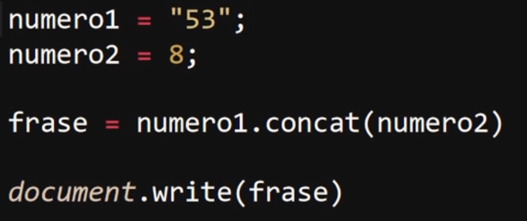
Resultado
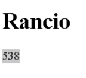
Nota: Forzar la variable como String también funciona con el "concat" tal como se puede ver en el ejemplo.
StartWith()
-
Este método determina si una cadena empieza con los mismos caracteres que otra; de ser así devuelve "true", de lo contrario devuelve "false".
Ejemplo
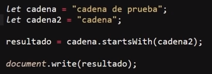
Resultado
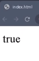
En este ejemplo la primera cadena empieza con los mismos caracteres que la segunda, por lo que el resultado es "true". Sin embargo, este método es de carácter estricto; por lo tanto, si ambas cadenas se diferencian en algo se dispara el resultado "false", por ejemplo, si se añade un espacio al inicio de alguna de las dos cadenas o si se añade algún carácter al final de estas.
EndsWith()
-
Este método devuelve "true" si una cadena termina con los mismos caracteres que otra, de lo contrario devuelve "false".
Ejemplo
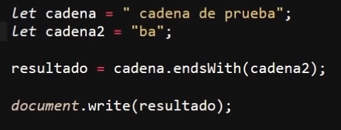
Resultado
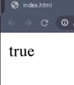
Este método se asemeja mucho al anterior, por lo que también es de carácter estricto; eso quiere decir que si se ingresa algún carácter que diferencie el final de ambas cadenas se dispara el "false" como resultado.
Includes()
-
Si una cadena se puede encontrar dentro de otra devuelve "true", de lo contrario devuelve "false"; en otras palabras, este método no diferencia en qué parte de la cadena se encuentra, simplemente determina si se encuentra o no dentro de otra.
Ejemplo
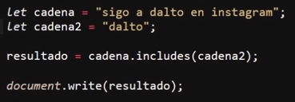
Resultado
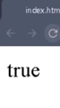
En este ejemplo la cadena "dalto" se encuentra dentro de la primera cadena por lo que el resultado es "true". Este método es estricto, por lo que del mismo modo que en los métodos anteriores, si se ingresa un carácter que genere alguna diferencia entre las dos cadenas el resultado será "false".
IndexOf()
-
Este método es exactamente igual que el anterior, con la diferencia de que este no retorna valores booleanos; en su lugar retorna la posición en la que se encuentra el primer carácter de la cadena que está siendo buscada dentro de la otra.
Ejemplo
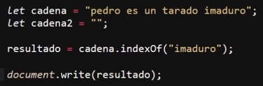
Resultado
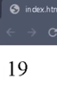
Es necesario recordar que los datos "strings" realmente son como un array, en los que se concatenan un valor detrás de otro, por lo que la numeración (posición) en la que está guardado dicho carácter es el dato que retorna este método; por lo tanto el primer carácter de la cadena se encuentra en la posición "19" dentro de la primera cadena.
Una particularidad de este método es que en el caso de que no se encuentre ningún carácter dentro de la cadena este método no retorna "false", en su lugar retorna "-1" de la siguiente manera:
Ejemplo
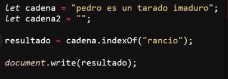
Resultado
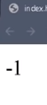
LastIndexOf()
-
Este método es igual que el anterior con la diferencia de que este se aplica en aquellas ocasiones en las que la cadena se repita más de una vez en el interior de la otra; entre todas estas repeticiones, este método devolverá la posición del primer carácter de la última coincidencia de la cadena:
Ejemplo
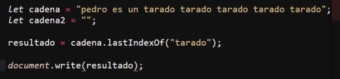
Resultado
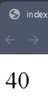
En este ejemplo el resultado es "40" ya que esta es la posición del carácter "t", el cual es el primer carácter de la cadena "tarado" encontrada por última vez dentro de la cadena principal.
Métodos para Rellenar Cadenas
Repeat()
-
Este método permite repetir una cadena las veces que sean indicadas.
Ejemplo
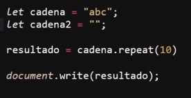
Resultado
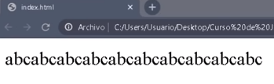
Al emplear este método es útil tener en cuenta que ingresar un valor negativo como número de repeticiones arrojará un error de rango, a la vez que ingresar un número decimal hará que este se convierta en entero y se ejecute dicha cantidad de repeticiones.
Métodos de Cadenas Experimentales
Estos métodos como tal aún no forman parte del estándar que todos los navegadores siguen, por lo que no todos los navegadores los reciben, haciendo necesario revisar la compatibilidad con estos; sin embargo, están propuestos para el estándar, por lo que puede que en un futuro cercano lleguen a formar parte de este.
PadStart()
-
Este método permite tanto definir la cantidad de caracteres que se desea que posea una cadena como definir con qué caracteres se quiere rellenar estos espacios; este método añade los nuevos caracteres al inicio de la cadena y los repite las veces que hagan falta hasta que se cumple con el número de caracteres establecido.
Ejemplo
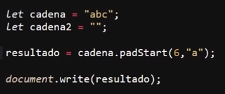
Resultado
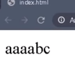
En este ejemplo se generó una primera cadena de tres (3) caracteres, se definió el método "padStart" para añadir el carácter "a" hasta que la cadena tenga una duración de seis (6) caracteres.
Nota: este método toma en cuenta los caracteres originales de la cadena para el conteo de la extensión de la cadena.
Nota: si la cadena original supera el número de caracteres establecido entonces el método no añadirá ningún otro carácter a esta cadena.
PadEnd()
-
Este método es exactamente igual que el anterior con la diferencia de que en vez de incluir los nuevos caracteres al inicio de la cadena lo hará al final de esta.
Ejemplo
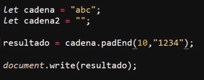
Resultado
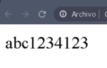
Métodos para Modificar la Cadena
Split()
-
Este método permite dividir una cadena en diferentes porciones y almacenarla en un array; por lo tanto, lo que devuelve este método es un array con las diferentes porciones de la cadena original almacenadas dentro de este.
Para hacer esto, el método necesita que se defina algún carácter como punto de referencia para dividir la cadena; por ejemplo, se puede indicar que cada vez que el método encuentre un espacio haga un corte en la cadena, de la siguiente forma:
Ejemplo
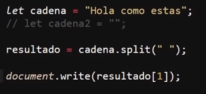
Resultado
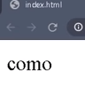
En este ejemplo cada vez que el método encuentre un espacio se generará un corte en la cadena; por lo tanto se almacenará una palabra en cada posición del array. En el ejemplo como resultado se hace llamado del dato almacenado en la segunda posición.
Un aspecto a tener en cuenta es que aquel carácter que se emplee como punto de referencia para generar los cortes de la cadena no será almacenado dentro del array.
Ejemplo
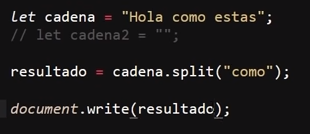
Resultado
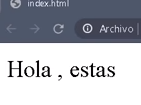
Substring()
-
Este método permite generar un nuevo "string" a partir del original; en otras palabras, este método permite "cortar" una sección de la cadena original y generar una nueva a partir de la sección cortada. Para esto el método permite definir las posiciones de los caracteres en las que se realizarán los cortes, tanto el de inicio como el de cierre.
Para lo cual el método requiere de dos datos que hacen referencia a la posición de los caracteres de la cadena, en los cuales el primer dato indica el primer carácter incluido mientras que el segundo indica el carácter en el que se realiza el corte; por lo tanto el segundo carácter no será incluido dentro del nuevo string.
Ejemplo
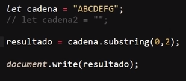
Resultado
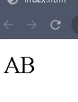
En este ejemplo de la cadena original se define que se genere un nuevo string que abarca desde la posición "0" hasta la "2" (sin incluirla), por lo que el nuevo string dispondrá de los caracteres en la posición "0" y "1".
ToLowerCase()
-
Este método es en realidad muy simple; su función es la de convertir cualquier carácter en mayúscula de la cadena a minúscula. Por lo tanto, retorna la misma cadena pero con todos sus caracteres en minúsculas.
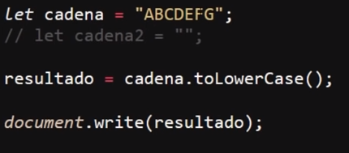
Resultado
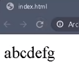
Nota: Recordar que JavaScript es un lenguaje sensible a las mayúsculas.
ToString()
-
Este método permite convertir datos a tipo "string", ya sean números o arrays; es decir, este método retorna únicamente cadenas de texto, ya sea que se le ingresen datos number y los retorne como string o se le ingresen varios conjuntos de datos como por ejemplo arrays o varias variables, en cuyo caso el método los retornará como una única cadena de texto.
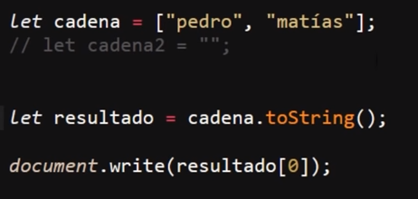
Resultado
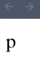
En este ejemplo se puede evidenciar que el método convirtió el array "cadena" a string ya que en el llamado el resultado es "p", puesto que "0" es la posición del primer carácter del string; si "cadena" siguiese siendo un array la posición "0" correspondería al primer dato, el cual solía ser "pedro".
Trim()
Este método posee una función muy específica, la cual es eliminar todos los espacios de una cadena.
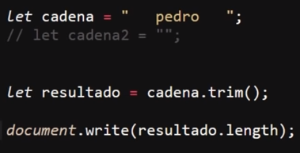
Resultado
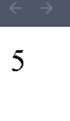
En este ejemplo el string "cadena" posee tres (3) espacios al principio y otros tres (3) al final de la cadena; se utiliza el método "trim" para eliminarlos y se almacena el resultado en la variable "resultado" a la cual se le aplica la propiedad "length" cuya función es enumerar los caracteres de un string, dando como resultado "5", lo que evidencia que los espacios fueron eliminados, de lo contrario su valor sería de "11" caracteres.
TrimStart
-
Su función es exactamente igual a la del método anterior, con la diferencia de que únicamente elimina los espacios que se encuentran al inicio de la cadena.
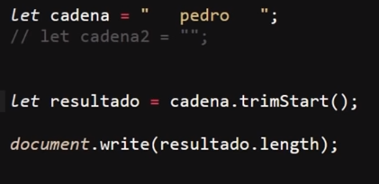
Resultado
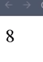
Este ejemplo es la continuación del anterior donde se puede ver que el método "trimStart" únicamente elimina los tres (3) espacios que se encontraban al principio de la cadena.
TrimEnd
-
Su función es exactamente igual a la del método anterior, con la diferencia de que únicamente elimina los espacios que se encuentran al final de la cadena.
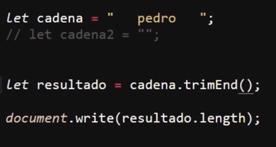
Resultado
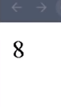
Este ejemplo es la continuación del anterior donde se puede ver que el método "trimEnd" únicamente elimina los tres (3) espacios que se encontraban al final de la cadena.